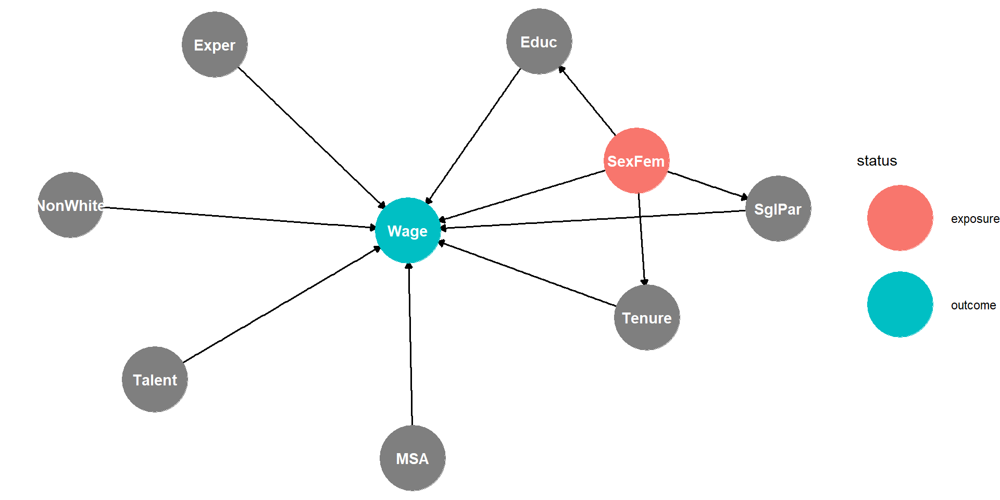

lm to run a multivariate regressionFrisch-Waugh-Lovell (FWL) Theorem in a Nutshell:
When the predictor variables in an OLS regression are not correlated, we can run \(j\) (e.g., two) Simple Regressions (regressions with only one predictor variable) and use the resulting \(\beta\)-coefficients for a joint multivariate regression.
Example: Predicting house \(Price\) based on \(Sft\) and \(Cond\) (condition of a house with 0 (worst) – 20 (best)):
\[\widehat{Price}_i= \beta_{Sqft} \cdot Sqft_i + \beta_{01}\] \[\widehat{Price}_i= \beta_{Cond} \cdot Cond_i + \beta_{02} \] \[\widehat{Price}_i= \beta_{Sqft} \cdot Sqft_i+\beta_{Cond} \cdot Cond_i + \beta_0 \]
The resulting \(\beta_0\) can be calculated based on the average of Price, Square Feet, and Condition,
\(\overline{Price}\), \(\overline{Sqft}\) and \(\overline{Cond}\), respectively.
\[\beta_0=\overline{Price}-\beta_{Sqft} \cdot \overline{Sqft} - \beta_{Cond} \overline{Cond}\]
We have a dataset for house prices (\(Price_i\)) together with predictor variables for the houses’ condition (\(Cond_i\); 1 – 20) and their square footage (\(Sqft_i\); 1000 – 3100).
\(Cond_i\) and \(Sqft_i\) are not correlated:
\[\widehat{Price_i}=\beta_1 \widehat{Sqft}+\beta_0\]
\[\widehat{Price_i}=\beta_1 \widehat{Cond}+\beta_0\]
From the Simple Regressions we got:
\(\beta_{Sqft}=213\) and \(\beta_{Cond}=15,018\)
From the multivariate regression we get:
\[\widehat{Price}_i= 213 \cdot Sqft + 15,018 \cdot Cond_i + 298,100\]
(FWL Theorem does not work!)
We have another dataset for house prices (\(Price_i\)) together with predictor variables for the houses’ condition (\(Rooms_i\); 1 – 8) and square footage (\(Sqft_i\); 1000 – 3000).
\(Rooms_i\) and \(Sqft_i\) are correlated. Each room has about 400 Sqft:
\[Sqft_i\approx 400\cdot Rooms + 0\]
Note, because of predictor correlation \(\neq\) 0. FWL Theorem is not applicable.
Sqft and Price:\(\beta_{Sqft}=216\) and \(\beta_{01}=291,181\)
Rooms and Price:\(\beta_{Rooms}=84,471\) and \(\beta_{02}=297,937\)
Sqft, Rooms and Price:From the Two Simple Regressions we got: \(\beta_{Sqft}=216\) and \(\beta_{Rooms}=84,471\)
From the Multivariate Regression we get:
Find variables that have a causal relationship with the outcome variable and are correlated with the outcome variable
Eliminate predictor variables that are correlated with each other
Write down the formula for the unfitted model. Such as: \[\widehat{Price}=\beta_1 Sqft + \beta_2 Cond +\beta_0\]
Run the regression
Substitute the \(\beta s\) in the formula with the values you got from the regression to get the fitted model.
Sanity test: Are the signs (positive/negative) what you expected. If not, the related variable does not belong in your model
Interpret the \(\beta (s)\). E.g., if predictor variable increases by one unit outcome increases by \(\beta\) units. Note, the intercept coefficient cannot be interpreted in almost all cases!
Check if P value is low enough (e.g., smaller than 0.05=5%). This is the probability for the related coefficient to be 0 and thus irrelevant. You want a low probability for that event. If P value is too high the related variable does not belong in your model. Note, no need to interpret the P for the intercept.
Use ? wage1 to learn more about the data:
Note, in wage analysis the wage is often used in logarithmic form and tenure and experience are squared. For simplicity, we use the orginal values instead.
Wage SexFem Tenure Exper Educ NonWhite MSA Married NumDep
1 3.10 1 0 2 11 0 1 0 2
2 3.24 1 2 22 12 0 1 1 3
3 3.00 0 0 2 11 0 0 0 2
4 6.00 0 28 44 8 0 1 1 0
5 5.30 0 2 7 12 0 0 1 1
6 8.75 0 8 9 16 0 1 1 0Can we trust a univariate regression with only \(SexFem\) ???
For example, education, tenure, experience etc. also influence \(Wage\)?

We do not have the variables Talent and SglPar.
Talent is no problem because it is not correlated with SexFem.
For SglPar we can use data-engineer:
Wage SexFem Tenure Exper Educ NonWhite MSA SglPar
1 3.10 1 0 2 11 0 1 1
2 3.24 1 2 22 12 0 1 0
3 3.00 0 0 2 11 0 0 1
4 6.00 0 28 44 8 0 1 0
5 5.30 0 2 7 12 0 0 0
6 8.75 0 8 9 16 0 1 0Choosing as many as possible is a bad idea!!!
If choosing all variables is a bad idea, we need a procedure to choose independent variables (predictors)!
Plan and think before you run a regression
Correlation Matrix
Experiment with the Wage Analysis: